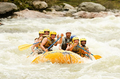
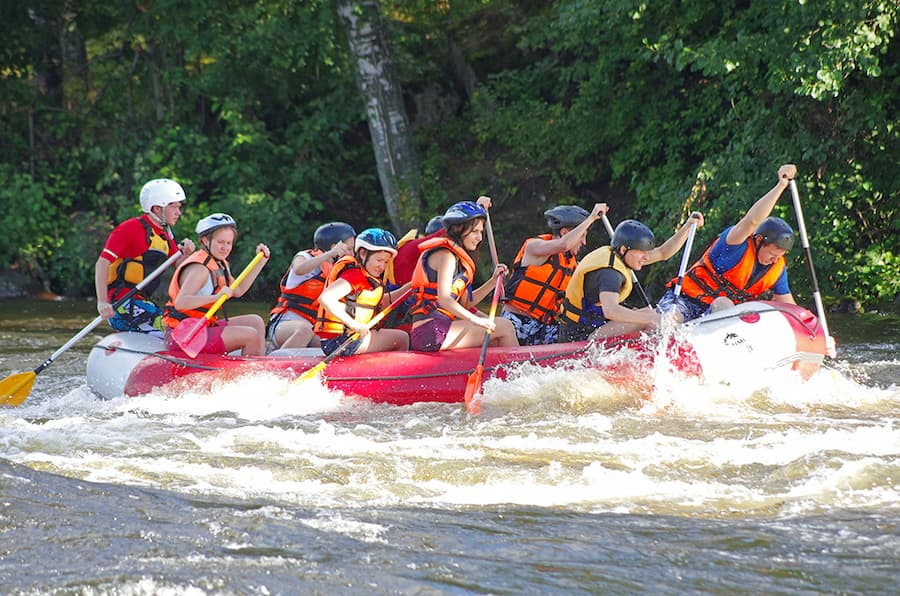

Our mission is to provide safe, thrilling, and unforgettable river adventures for families and thrill-seekers alike. We believe the river has a story to tell, and we want to help you hear it.


Our mission is to provide safe, thrilling, and unforgettable river adventures for families and thrill-seekers alike. We believe the river has a story to tell, and we want to help you hear it.

White Water Rafting Co. was born out of a desire to push boundaries. What started as a weekend hobby for our founders quickly turned into a mission: to provide the most exhilarating whitewater experiences in the region. From our humble beginnings on the Salmon River to our now-extensive range of guided tours, we have spent every year since our inception mastering the currents and perfecting the art of the 'perfect splash.